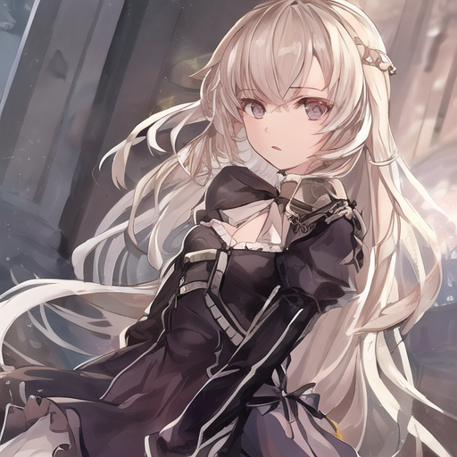
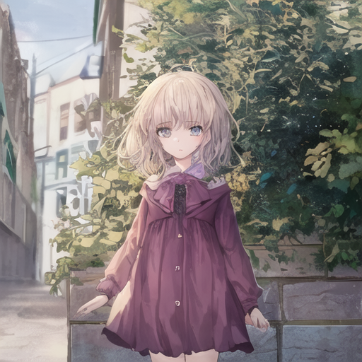
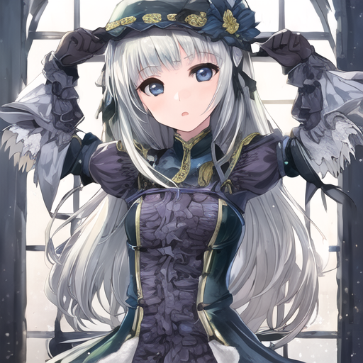
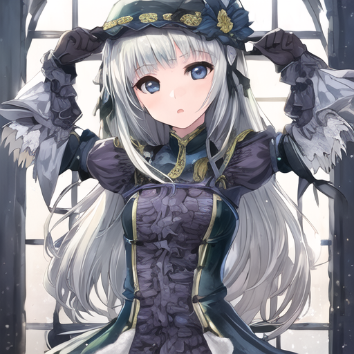

[AI画像生成ノウハウ2]AI画像生成で生成される画像の質を上げる方法9選!!
デモ
特に何も考えずに画像生成した場合
使用ツール = pythonのdiffusersライブラリ
使用モデル = Anything XL
サンプリングステップ数 = デフォルト
CFGスケール = デフォルト
スケジューラ = デフォルト
横 * 高さ = 515 * 512
プロンプト = (masterpiece:1.3,best quality:1.3,ultra-detailed:1.3),girl
ネガティブプロンプト = デフォルト


 

今回紹介することを意識した場合
使用ツール = pythonのdiffusersライブラリ
使用モデル = Anything XL
サンプリングステップ数 = 20
CFGスケール = 6
スケジューラ = Euler
横 * 高さ = 515 * 512
プロンプト = (masterpiece:1.3,best quality:1.3,ultra-detailed:1.3),girl
ネガティブプロンプト = bad anatomy,low quality,normal quality,ugly,lowers,worst quality,ugly,jpeg artifacts,error

特に何も考えずに画像生成した場合との違いが分かりましたでしょうか？
かなり変わりますよね!?
ちなみに画像生成モデルは全く同じものを使っています。
今回は、どうやってここまで良い画像を狙って生成したかを紹介していきます。
良い画像・望む画像を生成する時にできること
画像生成で良い画像が生まれる確率を上げるためにできることは以下の通りです。
- プロンプトを弄る
- ネガティブプロンプトを弄る
- サンプリングステップ数を弄る
- CFGスケール(ガイダンススケール)を弄る
- モデルを変える
- スケジューラを変える
- rolaを使用する
- 縦横比を変える
- rivisionをfp32にする
- 何度も生成する
次はそれぞれの項目について解説していきます。
プロンプトを弄る
まずはプロンプトを見直しましょう。
画像生成にはよく使われる鉄板のプロンプトがいくつもあります。
そういったプロンプトを取り入れてみましょう。
美しい・綺麗な画像を生成したい時に使う鉄板プロンプト
美しい・綺麗な画像を生成したい時に使う鉄板プロンプトは以下の通りです。
- masterpiece
- best quality
- ultra detailed
- 4k
上記の中から1～3個ほど取り入れてみましょう。
例えば、「立っている猫耳女の子」の画像を生成する際、"girl,cat,stand"ではなく、"masterpiece,best quality,girl,cat,stand"という風にしてみましょう。
このプロンプトだけでもかなり変わると思います。
ちなみに、「ultra detailed」はどちらかというと、リアルな画像にしたい時に向いているプロンプトです。
プロンプトの順番に関してですが、左側のプロンプトほど優先されるという仕様があります。
鉄板の順番は
といった感じです。
鉄板プロンプトの数ですが、多く入れると競合して逆に変な画像が生まれます。
また、好みや使用するモデルとの相性もあるので、色々弄って調整してみてください。
以下は鉄板プロンプトを取り入れた時と、そうじゃないときの画像です。
プロンプト = (masterpiece:1.3,best quality:1.3,ultra-detailed:1.3),girl
ネガティブプロンプト = デフォルト
プロンプト = girl
ネガティブプロンプト = デフォルト
全くちがいますよね！？
そうなんです!
ですから皆さんも鉄板プロンプトを取り入れてみましょう。
ちなみに、上記4つのプロンプト以外にも鉄板プロンプトは沢山あります。
興味がある方は調べてみると面白いです。
また、括弧やコロンなどの表記はまた後日紹介します。
一応意味を説明すると、括弧で強調表現し、カンマで区切られたそれぞれの項目の優先度を1.3倍にするという意味です。
要するに「画質に関わるプロンプトをしっかり意識してね」とAIに指示を出しているということです。
ざっくりこんな指定ができるんだなと思っていただければ幸いです。
今回は違いを分かりやすくするために、このようなプロンプトを使いました。
ネガティブプロンプトを弄る
ネガティブプロンプトも鉄板プロンプトがあります
それは以下の通りです。
- low quality
- worst quality
- ugly
他にも色々ありますが、とりあえず3つピックアップしてみました。
ネガティブプロンプトはプロンプトとは違い、ある程度色んな種類を入れた方が効力を発揮します。
どういう組み合わせで何個入れるかどうかは生成したい画像との相性によります。
実は私も相性についてはまだ把握できておらず、試行錯誤中です。
ですので今は、プロンプトとネガティブプロンプト少し変えて生成し、うまくいかなかったらまた少し変えて生成する、という作業を繰り返してやっています。
というのが今までの常識でした。
しかし現在は、そもそも出来が良いモデルだとネガティブプロンプト無しで良質な画像が生成できたり、イージーネガティブでネガティブプロンプトを省略できたりします。
このイージーネガティブを使うと、誰かが作った洗練されたネガティブプロンプトを使って画像を生成するので、ネガティブプロンプトを設定しなくても良い画像が作れたりします。
じゃあなんでネガティブプロンプトについて紹介したのかというと、easyNegativeが使えなかったり、なんだかんだ独自でネガティブプロンプトを書きたくなったりするからです。
ですので、これから画像生成を始める方はあまりネガティブプロンプトに触れる機会は無いかもしれませんが、こういった背景を知っておくと何かと便利なので一応紹介しました。
以下はネガティブプロンプトの有無の違いです。
プロンプト = girl
ネガティブプロンプト = bad anatomy,low quality,normal quality,ugly,lowers,worst quality,ugly,jpeg artifacts,error
プロンプト = girl
ネガティブプロンプト = デフォルト

サンプリングステップ数を弄る
サンプリングステップ数とは、画像生成の過程で画像のノイズを除去する回数のことです。
画像生成って実は絵を描いているわけではないんです。
以下のようなノイズだらけの画像から、ノイズを引き算して絵を作っているんです。
サンドアートに近いですね。
なぜこのようなやり方をしているかは正直私も分かりません。
AIの仕組みについて学ぼうと思っているので、理由が分かり次第、記事を書いていこうかと思います。
以下はサンプリングステップ数毎の比較です
サンプリングステップ数 = 1
プロンプト = girl
ネガティブプロンプト = デフォルト
サンプリングステップ数 = 10
プロンプト = girl
ネガティブプロンプト = デフォルト
サンプリングステップ数 = 20
プロンプト = girl
ネガティブプロンプト = デフォルト
サンプリングステップ数 = 30
プロンプト = girl
ネガティブプロンプト = デフォルト
サンプリングステップ数 = 40
プロンプト = girl
ネガティブプロンプト = デフォルト
サンプリングステップ数 = 50
プロンプト = girl
ネガティブプロンプト = デフォルト
CFGスケール(ガイダンススケール)を弄る
CFGスケールとガイダンススケールはほぼ同じ意味です。
ここではCFGスケールと呼びます。
CFGスケールとは、どれだけプロンプトの命令に従うかというものです。
数値が大きいほど命令に忠実になるので、CFGスケールが5より10の方が狙った画像が出しやすいです。
しかしその分自己判断しづらくなるので、かなり詳細にプロンプトを書き込まないと変な画像が生成されやすいです。
つまり、CFGスケールは多きすぎても少なすぎてもダメなんです。
ですがこの値は研究され尽くしてるので、もう使う値は相場が決まってます。
CFGスケールの丁度良い値はずばり、6か7です。
6と7は若干の差しかないので、お好みで良いと思います。
私は6を愛用しています。
pythonのdiffusersでのCFGスケジューラの変え方は以下の通りです。
縦横比を変える
この知識を使う機会は少ないかもしれませんが、一応紹介いたします。
これは私の経験則になるので正しいかは分かりませんが、実は縦横比が違うだけで生成される画像の傾向が違ってくる気がします。
例えば立った画像を生成するとき、縦長だと全身を映しますが、上下の比率が1:1だと肖像絵みたいに腰より上の画像が生成されやすい気がします。
仮説ですが、立った人を描く時にわざわざ横長の絵を書かないで縦長の絵を書く人が多い、という傾向をAIが学習しているのではないかと考えています。
ちなみに、高さか横幅が1024を超えると画像の質が著しく低下するので、512*512か768*512か512*768のどれかで画像生成することをおすすめします。
画像生成モデルを変える
使うモデルを変えるのも大事です。
というのも、クオリティの高い絵や好みの画風を出すには、プロンプトやパラメータを弄るだけでは限界があるからです。
つまり、完成度の低いモデルで高クオリティの画像を生成するのは熟練のプロンプト職人でもない限り厳しいです。
ですので、お気に入りのモデルを探すつもりで画像生成モデルを探してみてはいかがでしょうか？
スケジューラを変える
スケジューラとは、ざっくりいうと画像生成を行う過程の仕組みのことです。
このスケジューラを変えるとだけで、画像の質が変わったり、生成速度が速くなります。
スケジューラはいくつもありますが、現時点では「Eular」と「DPM++ 2m karras」がスケジューラの2強です。
ですので、この二つから好きな方をお選びください。
ちなみにこの2つの違いですが、「Eular」の方が生成速度が10%～30%程早いです。
その代わり、ガチガチにプロンプト組んだ場合、「DPM++ 2m karras」の方が高品質画像を作りやすかったりします。
私は「Eular」を愛用していますが、「DPM++ 2m karras」の方が人気が高いかな～って感じがします。
以下はpythonのduffusersでのスケジューラの変え方です
pythonのdiffusersでスケジューラを変えるには、以下のコードをモデルを読み込んでから生成するまでの間に書けばOKです。
from diffusers import EulerDiscreteScheduler
pipe.scheduler = EulerDiscreteScheduler.from_config(pipe.scheduler.config)
何度も生成する
今までご紹介したことを全て踏まえても、好みの画像が生成されるとは限りません。
デモで見せた画像をを見てもらうと分かる通り、全く同じ方法で生成しても、まったく別の画像が生成されます。
そのため、何度も生成する必要があります。
生成するたびにプロンプトを調整する必要もあります。
どれぐらい妥協するかによりますが、最低でも数十回。
こだわるなら数百回の画像生成は覚悟しておきましょう。
めんどくさいと思ったかもしれませんが、そうなんです。
実際めんどくさいんです。
狙った画像や良質な画像を作るには、知識や経験が必要なのは勿論、手間も時間もかかります。
ガチでやるならお金もかかります。
余談
いかがだったでしょうか？
生成画像の質を上げたり、狙った画像を生成する際にできることが多くて驚いた方もいると思います。
また、画像のサイズを変えると生成される画像の傾向が変わるのが盲点だった方もいると思います。
そして皆さん薄々感じてるかもしれませんが、そうなんです！
実は画像生成って難しいんです。
画像生成で良い画像を作るにはかなりの知識・経験が必要なんです。
ですから著作権侵害してるならともかく、AI画像というだけで差別しないようお願いしたいです。
一見、Xなどで簡単そうに作ってる人を見かけますが、その裏には努力があるんです。
私もまだまだ試行錯誤中ですが、それでも生成した画像は軽く1000を超えます。
それでも難しいと感じています。
もしAI画像を差別してる人を見かけた場合、「ああ、この人はやったこと無いから分からないんだな」と優しく見守ってあげましょう。
皆さんが今まで以上に画像生成を楽しめることを願っています。
ではまた！